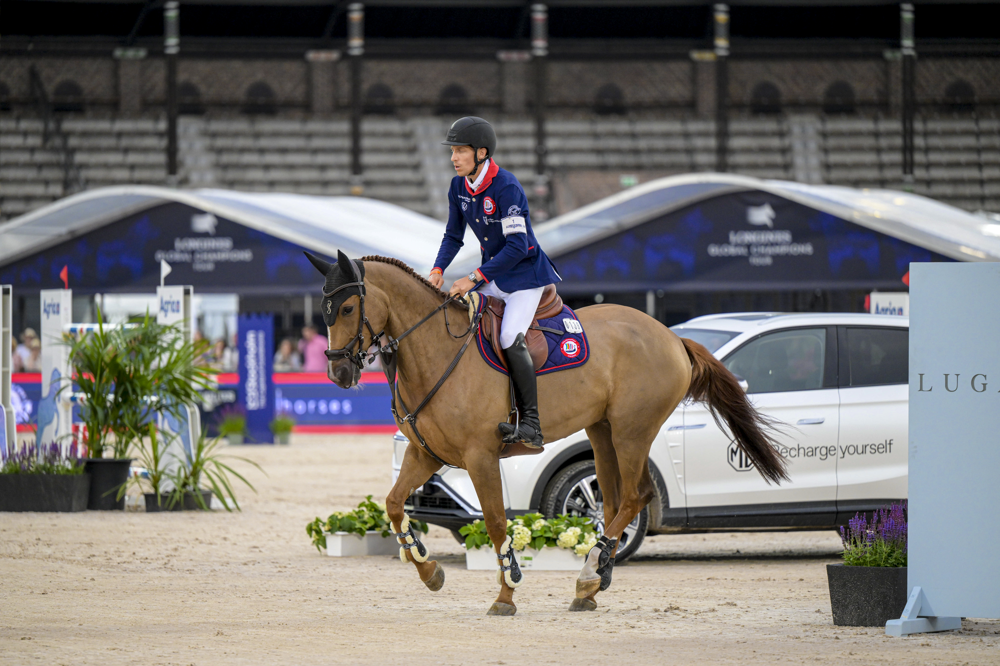

La semana del salto: La Baule (CSIO5*) y St Tropez (GCT) marcan el calendario europeo
La semana del 8 al 14 de junio trae uno de los tramos más cargados del calendario europeo de salto, con dos cinco estrellas en suelo francés —el CSIO5\* de La Baule y la octava parada del Longines Global Champions Tour en St Tropez— como núcleo de una agenda que suma además dos CSIO (Sopot y…

Uso editorial
La semana del 8 al 14 de junio trae uno de los tramos más cargados del calendario europeo de salto, con dos cinco estrellas en suelo francés —el CSIO5* de La Baule y la octava parada del Longines Global Champions Tour en St Tropez— como núcleo de una agenda que suma además dos CSIO (Sopot y Drammen), el regreso a Spruce Meadows para la segunda semana del Continental Tournament y varios CSI4* repartidos entre Europa y Norteamérica.
El epicentro está en La Baule, que vuelve a acoger su CSIO5* con la Copa de Naciones europea como prueba reina del calendario continental tras la disputada en St. Gallen el fin de semana anterior. El Jumping International de la ciudad bretona reparte la mayor bolsa europea de la semana y se ha consolidado como antesala lógica del Mundial de Aachen para los equipos que buscan rodaje a cinco estrellas. La otra cita francesa de la semana es el CSI5*-GCT de St Tropez, octava parada del circuito Longines Global Champions Tour y de la Global Champions League, escenario habitual de los binomios del top mundial y de los jinetes españoles más activos en el circuito.
En clave española, la semana concentra el interés en quién aparece en las pistas de La Baule y St Tropez —inscritos por confirmar en el momento del cierre de esta agenda— y en el seguimiento del CSI2* internacional que ya estaba en marcha en la geografía nacional. Con el bloque francés repartido entre Copa de Naciones y Global Tour, son dos escaparates muy distintos: La Baule mide a los equipos y a sus jefes de equipo de cara a Aachen, mientras que St Tropez puntúa para el ranking individual del GCT y suma cheques de Grupo I del calendario privado.
La semana se completa con varios concursos de relieve. En Polonia, el CSIO4* de Sopot acoge otra etapa de Copa de Naciones europea, una segunda división muy disputada por equipos que pelean ascenso. En Noruega, el CSIO3* de Drammen abre la temporada al aire libre del país nórdico. En Bélgica, el habitual CSI4* de Sentower Park (Opglabbeek) vuelve al calendario como cita técnica para binomios europeos, y en Norteamérica Spruce Meadows encadena el segundo CSI5* de su Continental Tournament y Traverse City (Williamsburg, MI) repite con un CSI4*. El bloque inferior se completa con CSI2* internacionales en Kronenberg, Saugerties (NY), Pedras Salgadas, Borgo La Caccia, Zagreb, Puebla y Ocala, entre otros.
— Redacción de Hípica al Día